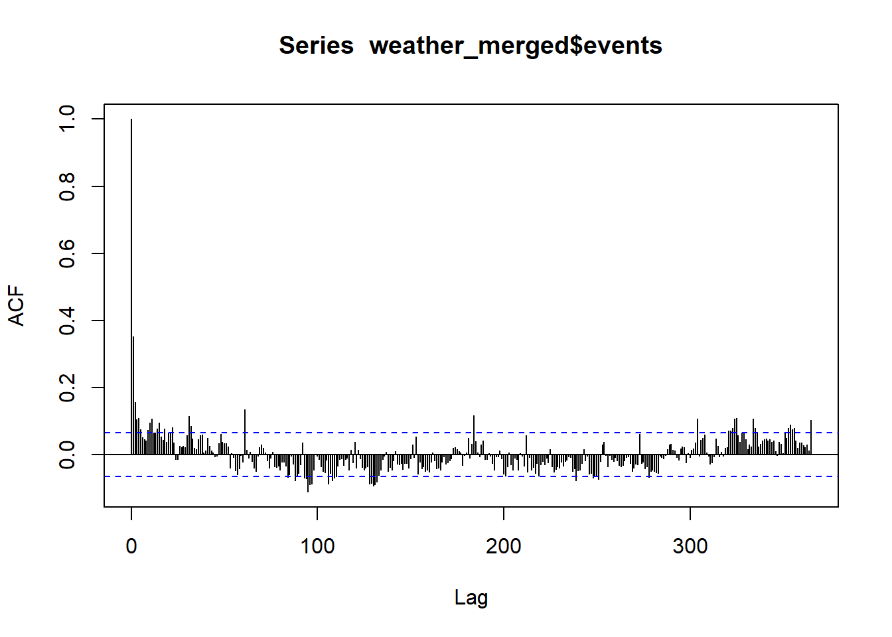
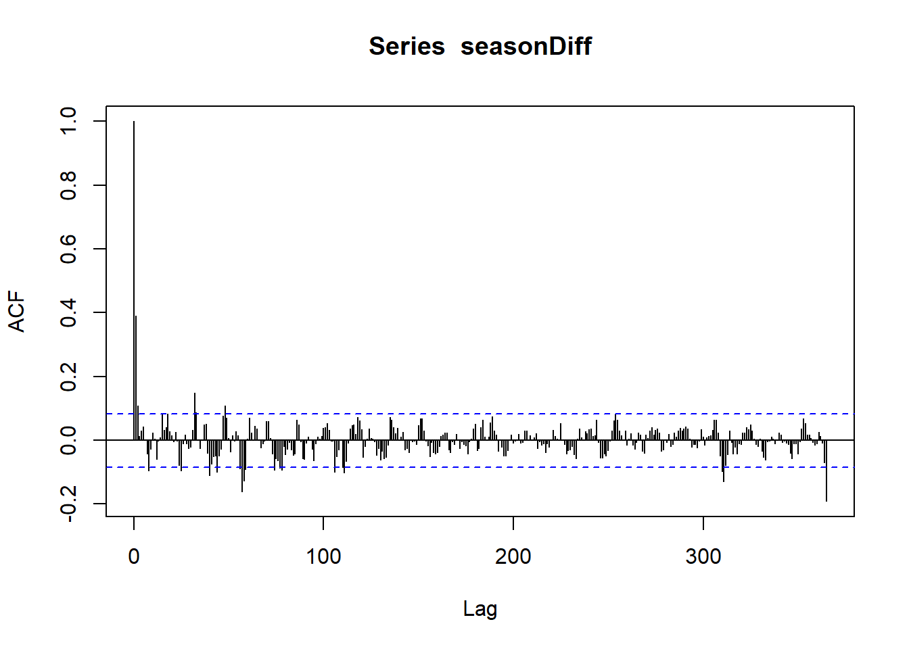
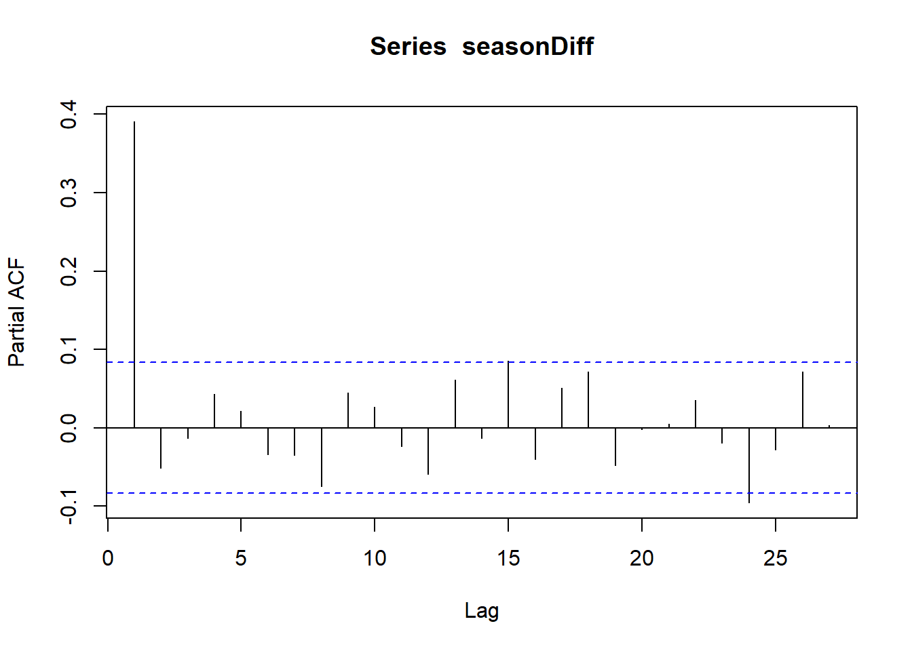
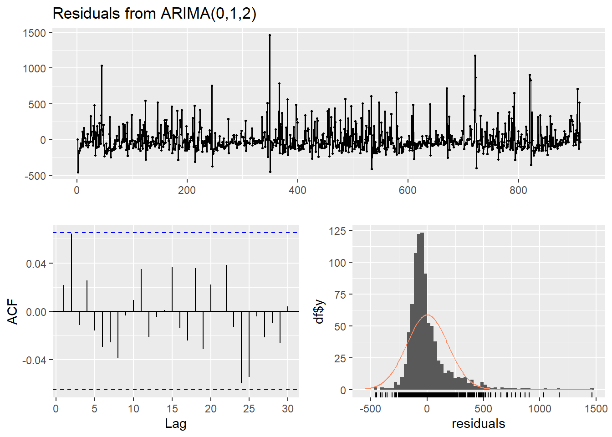
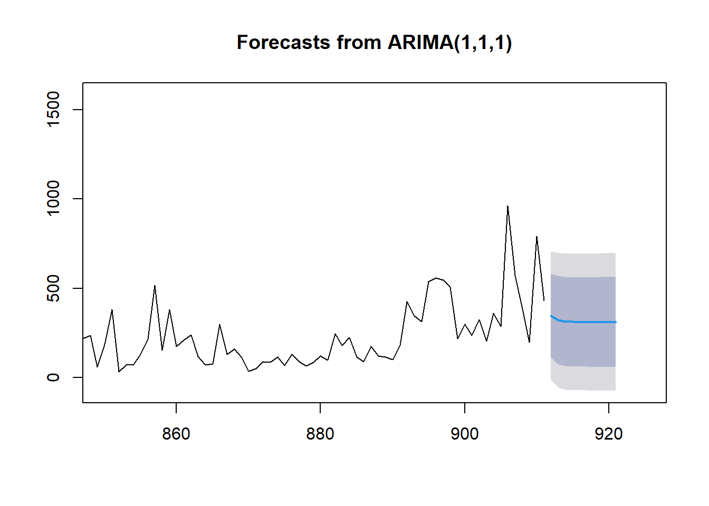
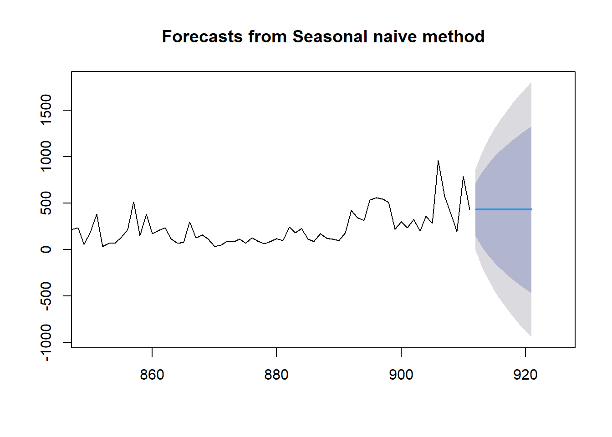
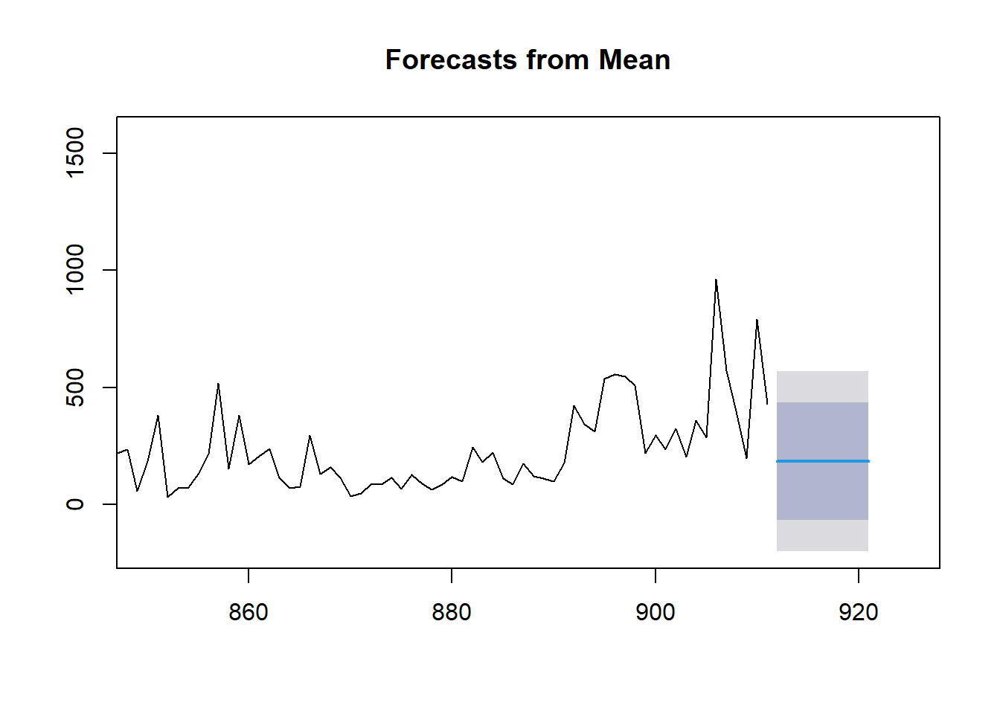
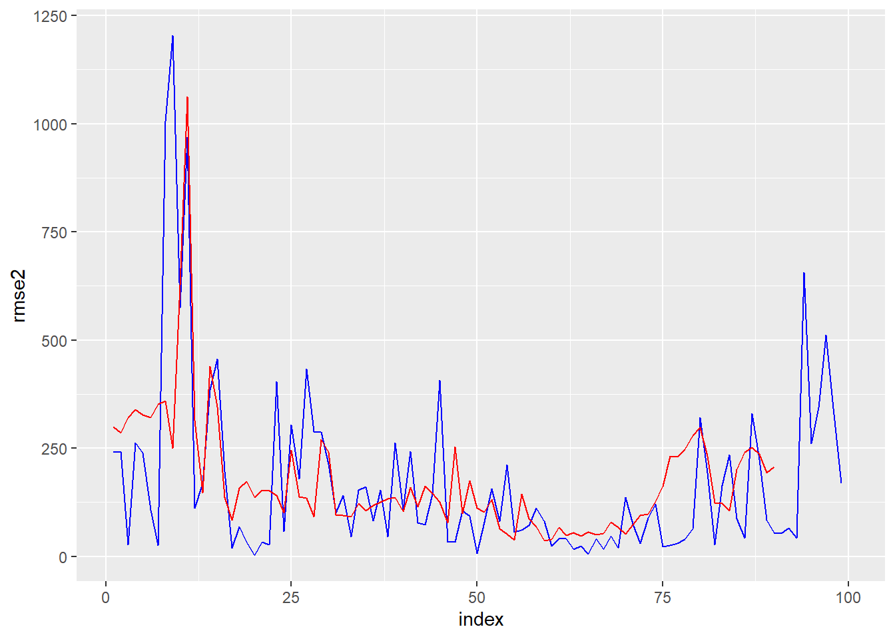

Code
library(tidyverse)
library(quantmod)
library(forecast)
library(tseries)
library(fpp2)
library(lubridate)Loading packages
library(tidyverse)
library(quantmod)
library(forecast)
library(tseries)
library(fpp2)
library(lubridate)Bringing the data into this tab as well:
spyIn <- quantmod::getSymbols("SPY", from = as.Date("2021/01/01"), to = as.Date("2023/09/30"), periodicity = "daily", src = "yahoo", auto.assign = FALSE)
qqqIn <- quantmod::getSymbols("QQQ", from = as.Date("2021/01/01"), to = as.Date("2023/09/30"), periodicity = "daily", src = "yahoo", auto.assign = FALSE)
iwmIn <- quantmod::getSymbols("IWM", from = as.Date("2021/01/01"), to = as.Date("2023/09/30"), periodicity = "daily", src = "yahoo", auto.assign = FALSE)
spyIn$spyRange <- (spyIn$SPY.High - spyIn$SPY.Low)/ spyIn$SPY.Open
qqqIn$qqqRange <- (qqqIn$QQQ.High - qqqIn$QQQ.Low)/ qqqIn$QQQ.Open
iwmIn$iwmRange <- (iwmIn$IWM.High - iwmIn$IWM.Low)/ iwmIn$IWM.Open
diff1SPY <- diff(spyIn$spyRange)
diff1QQQ <- diff(qqqIn$qqqRange)
diff1IWM <- diff(iwmIn$iwmRange)Based on previous results, and the fact that I am using “pseudo-differenced data” in that I am taking the percentage range in prices, in addition to a single differencing, means that the time series are stationary
Since I did some of this work with SPY data on the EDA tab, I will focus on QQQ range data here.
#print(diff1QQQ)
acf(diff1QQQ, na.action = na.exclude)
pacf(diff1QQQ, na.action = na.exclude)
Based on these charts the order I would pick for QQQ is: ARIMA(2,1,0)
modelQQQ1 <- arima(diff1QQQ, order = c(2,1,0))
summary(modelQQQ1)
Call:
arima(x = diff1QQQ, order = c(2, 1, 0))
Coefficients:
ar1 ar2
-1.0035 -0.4832
s.e. 0.0334 0.0334
sigma^2 estimated as 0.0001131: log likelihood = 2149.08, aic = -4292.16
Training set error measures:
ME RMSE MAE MPE MAPE MASE
Training set 4.630039e-05 0.01062913 0.007805518 87.46782 258.6253 0.6398223
ACF1
Training set -0.1944037Equation is x = -1.0034x(t-1) - 0.4832x(t-2) + error
Model Diagnostic:
stats::tsdiag(modelQQQ1)
The Ljung Box statistics look cood, although the ACF of the residuals does have 1 significant term.
I originally tried a (4,1,2) model, however the ljung box statistics were highly correlated, and I suspected overfitting. After reducing the parametrization greatly, the new model performed mnuch better.
autoQQQ <- auto.arima(diff1QQQ)
summary(autoQQQ)Series: diff1QQQ
ARIMA(1,0,1) with zero mean
Coefficients:
ar1 ma1
-0.0008 -0.8122
s.e. 0.0524 0.0361
sigma^2 = 5.483e-05: log likelihood = 2402.77
AIC=-4799.55 AICc=-4799.51 BIC=-4785.94
Training set error measures:
ME RMSE MAE MPE MAPE MASE
Training set -6.694728e-05 0.00739421 0.005455453 283.3672 549.0245 0.446905
ACF1
Training set 0.003755607The auto.arima method chose an ARIMA(1,0,1) model. However, this model did not perform as well in terms of AIC, with the Auto arima model having a score of -4799 while my model had a score of -4292.
plot(forecast(modelQQQ1, 10), xlim = c(650,750)) 
Forecasting with auto arima model
plot(forecast(autoQQQ, 10), xlim = c(650,750))
Overall, my model has a slightly more dynamic prediction than the auto arima function, which quicly levels out to 0. However, my model also has a much wider uncertainty band.
naiveModelQQQ <- naive(diff1QQQ, h=1)
snaiveModelQQQ <- snaive(diff1QQQ, h=1)
summary(naiveModelQQQ)
Forecast method: Naive method
Model Information:
Call: naive(y = diff1QQQ, h = 1)
Residual sd: 0.0165
Error measures:
ME RMSE MAE MPE MAPE MASE ACF1
Training set 2.387746e-05 0.016488 0.01219951 309.6279 564.6879 1 -0.6746326
Forecasts:
Point Forecast Lo 80 Hi 80 Lo 95 Hi 95
691 -0.003168135 -0.02429836 0.01796209 -0.03548403 0.02914776summary(snaiveModelQQQ)
Forecast method: Seasonal naive method
Model Information:
Call: snaive(y = diff1QQQ, h = 1)
Residual sd: 0.0165
Error measures:
ME RMSE MAE MPE MAPE MASE ACF1
Training set 2.387746e-05 0.016488 0.01219951 309.6279 564.6879 1 -0.6746326
Forecasts:
Point Forecast Lo 80 Hi 80 Lo 95 Hi 95
691 -0.003168135 -0.02429836 0.01796209 -0.03548403 0.02914776summary(modelQQQ1)
Call:
arima(x = diff1QQQ, order = c(2, 1, 0))
Coefficients:
ar1 ar2
-1.0035 -0.4832
s.e. 0.0334 0.0334
sigma^2 estimated as 0.0001131: log likelihood = 2149.08, aic = -4292.16
Training set error measures:
ME RMSE MAE MPE MAPE MASE
Training set 4.630039e-05 0.01062913 0.007805518 87.46782 258.6253 0.6398223
ACF1
Training set -0.1944037I fit a naive and seasonal naive model. On RMSE my model had the best performance, with 0.011, while the naive and snaive models had 0.017 rmse each (since there was no seasonal period I realized they were the same model). On MAE my arima model had 0.008 while the seasonal naive models had 0.0122.
Let’s compare forecasts:
plot(forecast(modelQQQ1, 10), xlim = c(650,750)) 
plot(forecast(naiveModelQQQ, 10), xlim = c(650,750)) 
Here, the naive method can only forecast 1 observation into the future, since the seasonal period is one. Which is an advantage to my model, but realistically means the naive model should be evaluated with cross validation.
Let’s look for a seasonal affect in the ACF plots, using the weather events data. First we prepare the data:
weather_data <- read.csv('data/storms_clean.csv')
weather_data$month <- weather_data$BEGIN_YEARMONTH %% 100
weather_data <- weather_data %>%
mutate(realdate = make_date(YEAR, month, BEGIN_DAY)) %>%
mutate(DAMAGE_PROPERTY = str_replace(DAMAGE_PROPERTY, "K", "") ) %>%
mutate(DAMAGE_PROPERTY = as.numeric(DAMAGE_PROPERTY)) %>%
mutate(DAMAGE_PROPERTY = replace_na(DAMAGE_PROPERTY, 0))Warning: There was 1 warning in `mutate()`.
i In argument: `DAMAGE_PROPERTY = as.numeric(DAMAGE_PROPERTY)`.
Caused by warning:
! NAs introduced by coercion# Daily Event Number
daily_events <- weather_data %>%
group_by(realdate) %>%
summarize(events = length(EPISODE_ID))
# Daily Property Damage
daily_property <- weather_data %>%
group_by(realdate) %>%
summarize(pdam = sum(DAMAGE_PROPERTY))
# Daily Daily Casualties
daily_casualties <- weather_data %>%
group_by(realdate) %>%
summarize(casualties = sum(INJURIES_DIRECT) + sum(INJURIES_INDIRECT) + sum(DEATHS_DIRECT) + sum(DEATHS_INDIRECT))
# Daily Hurricanes
daily_hurricanes <- weather_data %>%
filter(EVENT_TYPE == "Hurricane") %>%
group_by(realdate) %>%
summarize(hurricaneWarnings = length(EPISODE_ID))
# Daily joined data
weather_merged <- full_join(daily_events, daily_property, by = "realdate")
weather_merged <- full_join(weather_merged, daily_casualties, by = 'realdate')
weather_merged <- full_join(weather_merged, daily_hurricanes, by = 'realdate')
head(weather_merged)# A tibble: 6 x 5
realdate events pdam casualties hurricaneWarnings
<date> <int> <dbl> <int> <int>
1 2021-01-01 643 918 1 NA
2 2021-01-02 75 189. 0 NA
3 2021-01-03 80 63 3 NA
4 2021-01-04 44 20 0 NA
5 2021-01-05 18 0 2 NA
6 2021-01-06 27 850 2 NANow, lets look at the acf plot:
acf(weather_merged$events, lag.max = 365)
With a 365 lag plot (as we are looking at weather data), we can see that for about 1/4 of the 365 lags, there is some positive correlation in the residuals (the same season), then for 1/2 the lags after that there is negative correlation (the opposite seasons), and then a return to significant positive correlation about 3/4 of the way through the data. This appears to show a clear seasonal effect of about 365. So let’s seasonally difference the data.
seasonDiff <- weather_merged$events %>% diff(lag = 365)
acf(seasonDiff, lag.max = 365)
pacf(seasonDiff)
After seasonal differencing, this plot looks much much better, without noticeable season-to-season correlations in the lags, although there is still some short-term correlation. And some repeating period which appears to be almost weekly in the residuals.
Based on the ACF and PACF plots, I would consider p of 1, d of 0, and q of 3. Then for P and Q I might consider 0, D would be 1 since we seasonally differenced. But let’s run some code to see the AIC of different values:
SARIMA.c=function(p1,p2,q1,q2,P1,P2,Q1,Q2,d1,d2,data){
temp=c()
d=1
D=1
s=12
i=1
temp= data.frame()
ls=matrix(rep(NA,9*378),nrow=378)
for (p in p1:p2)
{
for(q in q1:q2)
{
for(P in P1:P2)
{
for(Q in Q1:Q2)
{
for(d in d1:d2)
{
if(p+d+q+P+D+Q<=8)
{
model<- Arima(data,order=c(p-1,d,q-1),seasonal=c(P-1,D,Q-1))
ls[i,]= c(p-1,d,q-1,P-1,D,Q-1,model$aic,model$bic,model$aicc)
i=i+1
#print(i)
}
}
}
}
}
}
temp= as.data.frame(ls)
names(temp)= c("p","d","q","P","D","Q","AIC","BIC","AICc")
temp
}
SARIMA.c(p1=1,p2=5,q1=1,q2=4,P1=1,P2=3,Q1=1,Q2=2,d1=0,d2=1,data=weather_merged$events) %>% filter(!is.na(p)) p d q P D Q AIC BIC AICc
1 0 0 0 0 1 0 12204.30 12213.93 12204.32
2 0 1 0 0 1 0 12419.43 12424.24 12419.43
3 0 0 0 0 1 1 12204.30 12213.93 12204.32
4 0 1 0 0 1 1 12419.43 12424.24 12419.43
5 0 0 0 1 1 0 12204.30 12213.93 12204.32
6 0 1 0 1 1 0 12419.43 12424.24 12419.43
7 0 0 0 1 1 1 12204.30 12213.93 12204.32
8 0 1 0 1 1 1 12419.43 12424.24 12419.43
9 0 0 0 2 1 0 12204.30 12213.93 12204.32
10 0 1 0 2 1 0 12419.43 12424.24 12419.43
11 0 0 0 2 1 1 12204.30 12213.93 12204.32
12 0 0 1 0 1 0 12102.10 12116.55 12102.13
13 0 1 1 0 1 0 12130.44 12140.07 12130.46
14 0 0 1 0 1 1 12102.10 12116.55 12102.13
15 0 1 1 0 1 1 12130.44 12140.07 12130.46
16 0 0 1 1 1 0 12102.10 12116.55 12102.13
17 0 1 1 1 1 0 12130.44 12140.07 12130.46
18 0 0 1 1 1 1 12102.10 12116.55 12102.13
19 0 0 1 2 1 0 12102.10 12116.55 12102.13
20 0 0 2 0 1 0 12090.24 12109.50 12090.28
21 0 1 2 0 1 0 12071.61 12086.05 12071.64
22 0 0 2 0 1 1 12090.24 12109.50 12090.28
23 0 0 2 1 1 0 12090.24 12109.50 12090.28
24 0 0 3 0 1 0 12090.34 12114.42 12090.41
25 1 0 0 0 1 0 12084.41 12098.85 12084.43
26 1 1 0 0 1 0 12303.82 12313.44 12303.83
27 1 0 0 0 1 1 12084.41 12098.85 12084.43
28 1 1 0 0 1 1 12303.82 12313.44 12303.83
29 1 0 0 1 1 0 12084.41 12098.85 12084.43
30 1 1 0 1 1 0 12303.82 12313.44 12303.83
31 1 0 0 1 1 1 12084.41 12098.85 12084.43
32 1 0 0 2 1 0 12084.41 12098.85 12084.43
33 1 0 1 0 1 0 12084.67 12103.93 12084.72
34 1 1 1 0 1 0 12067.11 12081.55 12067.14
35 1 0 1 0 1 1 12084.67 12103.93 12084.72
36 1 0 1 1 1 0 12084.67 12103.93 12084.72
37 1 0 2 0 1 0 12077.36 12101.43 12077.43
38 2 0 0 0 1 0 12085.17 12104.42 12085.21
39 2 1 0 0 1 0 12240.65 12255.09 12240.67
40 2 0 0 0 1 1 12085.17 12104.42 12085.21
41 2 0 0 1 1 0 12085.17 12104.42 12085.21
42 2 0 1 0 1 0 12074.21 12098.29 12074.28
43 3 0 0 0 1 0 12085.39 12109.46 12085.45SARIMA.c(p1=1,p2=5,q1=1,q2=4,P1=1,P2=3,Q1=1,Q2=2,d1=0,d2=1,data=seasonDiff) %>% filter(!is.na(p)) p d q P D Q AIC BIC AICc
1 0 0 0 0 1 0 7590.941 7599.546 7590.963
2 0 1 0 0 1 0 7681.255 7685.556 7681.263
3 0 0 0 0 1 1 7590.941 7599.546 7590.963
4 0 1 0 0 1 1 7681.255 7685.556 7681.263
5 0 0 0 1 1 0 7590.941 7599.546 7590.963
6 0 1 0 1 1 0 7681.255 7685.556 7681.263
7 0 0 0 1 1 1 7590.941 7599.546 7590.963
8 0 1 0 1 1 1 7681.255 7685.556 7681.263
9 0 0 0 2 1 0 7590.941 7599.546 7590.963
10 0 1 0 2 1 0 7681.255 7685.556 7681.263
11 0 0 0 2 1 1 7590.941 7599.546 7590.963
12 0 0 1 0 1 0 7508.844 7521.752 7508.888
13 0 1 1 0 1 0 7574.405 7583.007 7574.427
14 0 0 1 0 1 1 7508.844 7521.752 7508.888
15 0 1 1 0 1 1 7574.405 7583.007 7574.427
16 0 0 1 1 1 0 7508.844 7521.752 7508.888
17 0 1 1 1 1 0 7574.405 7583.007 7574.427
18 0 0 1 1 1 1 7508.844 7521.752 7508.888
19 0 0 1 2 1 0 7508.844 7521.752 7508.888
20 0 0 2 0 1 0 7502.242 7519.453 7502.316
21 0 1 2 0 1 0 7501.777 7514.680 7501.822
22 0 0 2 0 1 1 7502.242 7519.453 7502.316
23 0 0 2 1 1 0 7502.242 7519.453 7502.316
24 0 0 3 0 1 0 7504.242 7525.755 7504.353
25 1 0 0 0 1 0 7502.164 7515.072 7502.208
26 1 1 0 0 1 0 7641.447 7650.048 7641.469
27 1 0 0 0 1 1 7502.164 7515.072 7502.208
28 1 1 0 0 1 1 7641.447 7650.048 7641.469
29 1 0 0 1 1 0 7502.164 7515.072 7502.208
30 1 1 0 1 1 0 7641.447 7650.048 7641.469
31 1 0 0 1 1 1 7502.164 7515.072 7502.208
32 1 0 0 2 1 0 7502.164 7515.072 7502.208
33 1 0 1 0 1 0 7502.957 7520.168 7503.031
34 1 1 1 0 1 0 7494.739 7507.642 7494.784
35 1 0 1 0 1 1 7502.957 7520.168 7503.031
36 1 0 1 1 1 0 7502.957 7520.168 7503.031
37 1 0 2 0 1 0 7504.242 7525.755 7504.353
38 2 0 0 0 1 0 7502.828 7520.038 7502.902
39 2 1 0 0 1 0 7610.893 7623.795 7610.937
40 2 0 0 0 1 1 7502.828 7520.038 7502.902
41 2 0 0 1 1 0 7502.828 7520.038 7502.902
42 2 0 1 0 1 0 7504.793 7526.306 7504.904
43 3 0 0 0 1 0 7504.726 7526.239 7504.838Based on the results of the function, the minimum AIC and BIC are for the model: (0,1,2)(0,1,0). If I run the SARIMA function on the 365 differenced data, then it returns (1,1,1,)(0,1,0) as the model with the lowest AIC. So I will compare these two models for the series, using diagnostics.
mod1 <- Arima(weather_merged$events,order=c(0,1,2),seasonal=c(0,1,0))
mod2 <- Arima(weather_merged$events,order=c(1,1,1),seasonal=c(0,1,0))
checkresiduals(mod1 )
Ljung-Box test
data: Residuals from ARIMA(0,1,2)
Q* = 8.0235, df = 8, p-value = 0.4312
Model df: 2. Total lags used: 10The residuals for model 1 (0,1,2)(0,1,0) show some clustering of volatility. In addition, they appear to be skewed to the right, as the right tail of the residual distribution is fatter than the left tail and has more outlying values. Finally, the ACF plot of the residuals looks good, with little visible correlation and no values crossing the significance line. In addition, the Ljung-Box test returns p=0.43, suggesting we can reject the idea that there is autocorrelation in the residuals.
checkresiduals(mod2 )
Ljung-Box test
data: Residuals from ARIMA(1,1,1)
Q* = 2.7198, df = 8, p-value = 0.9507
Model df: 2. Total lags used: 10The residual diagnostics for model 2 (1,1,1)(0,1,0) are similar to model 1, except that they have even less correlatoin visible in the residual plots. The residual’s distribution is still skewed to the right, with a fatter positive tail. The ACF plot, however, has even less correlation visible, with only two values even coming marginally close to the significance line. There is still some heteroskedacticity in the plot over time, however, suggesting clustering of volatility.
Now, let’s use an Auto.Arima function to determine the correct model:
aaData <- ts(weather_merged$events)
mod3 <- auto.arima(aaData, seasonal = TRUE, trace = TRUE)
Fitting models using approximations to speed things up...
ARIMA(2,0,2) with non-zero mean : 12069.53
ARIMA(0,0,0) with non-zero mean : 12204.32
ARIMA(1,0,0) with non-zero mean : 12079.82
ARIMA(0,0,1) with non-zero mean : 12102.76
ARIMA(0,0,0) with zero mean : 12785.96
ARIMA(1,0,2) with non-zero mean : 12082.52
ARIMA(2,0,1) with non-zero mean : 12069.52
ARIMA(1,0,1) with non-zero mean : 12081.01
ARIMA(2,0,0) with non-zero mean : 12079.36
ARIMA(3,0,1) with non-zero mean : 12069.61
ARIMA(3,0,0) with non-zero mean : 12080.39
ARIMA(3,0,2) with non-zero mean : 12072.31
ARIMA(2,0,1) with zero mean : Inf
Now re-fitting the best model(s) without approximations...
ARIMA(2,0,1) with non-zero mean : 12074.28
Best model: ARIMA(2,0,1) with non-zero mean Regardless of the frequency fed into the model, Auto.arima only wants to fit a (2,0,1) ARIMA model. I tried 365, 90, 60, 40, 14, and 7 day frequencies, and in each case the seasonal term was not chosen for the data. I think the reason that it doesn’t recognize the seasonality is because it doesn’t worok with 365, which should be the best frequency for the data.
Forecast with a confidence band: Model 1 (0,1,2)(0,1,0)
plot(forecast(mod2), xlim = c(850,925))
Model 2: (1,1,1)(0,1,0)
plot(forecast(mod1), xlim = c(850,925))I think the forecasts are interesting, because model 2 has a more dynamic forecast, with a decrease over several days before leveling out its prediction. Model 1, meanwhile, predicts that the series will hardly change after its first prediction. While the series does not have a lot of trend going into the prediction interval, weather events are dynamic and I would tend to believe the model which includes more variation as opposed to constant numbers of events. Hence, I would select the (1,1,1)(0,1,0) SARIMA model.
Benchmark Comparison
We will use two benchmark methods: A seasonal naive forecast and a mean forecast.
base1 <- snaive(aaData, 10)
base2 <- meanf(aaData, 10)
plot(base1, xlim = c(850,925))
Here we can see the plot for the seasonal naive model’s forecasts (10 days out), which show a predicted value close to the last observed value in the series. It has a high degree of uncertainty as shown by the prediction interval, which is quite wide.
plot(base2, xlim = c(850,925) ) 
The forecast for the meanf model (above) departs further from the previously observed values, as the mean of the series is substantially below recently observed values. However, the model has a smaller prediction interval than the seasonal naive forecast, which is a slight advantage.
Now let’s look at the accuracy of the three forcasts:
accuracy(snaive(aaData)) ME RMSE MAE MPE MAPE MASE ACF1
Training set -0.232967 222.2549 134.6615 -92.97186 141.104 1 -0.3466138accuracy(meanf(aaData)) ME RMSE MAE MPE MAPE MASE
Training set 4.269057e-15 195.8141 137.4244 -231.3227 259.5254 1.020517
ACF1
Training set 0.3527022accuracy(mod2) ME RMSE MAE MPE MAPE MASE
Training set 1.865123 182.4393 120.2761 -152.6725 179.3078 0.8931731
ACF1
Training set 0.006055532The accuracy statistics were a mixed result between the seasonal naive forecast and the SARIMA(1,1,1)(0,1,0) model. The mean forecast did not perform better on any metric than the other two models, and could be discarded. On Root Mean Squared Error, the SARIMA model beat the Seasonal Naive model with a value of 182.4 vs. 222.3, respectively. On Mean Absolute Error, the SARIMA model also performed better, with 120.3 compared to the Seasonal Naive model’s 134.7. On the Mean Absolute Percentage Error, however, the Seasonal Naive model performed better than the SARIMA model, achieving 141.1 vs. 179.3 for the SARIMA model.
Overall, it seems like the accuracy metrics might favor the seasonal naive model, while the prediction forecasts look more accurate for the SARIMA model.
Cross Validation: Let’s do a seasonal cross-validation with 1 and 10-step-ahead forecasts.
# I add a 100 day buffer to my period of 365 days to have enough data
test <- 100
trainnum <- length(aaData) - test
rmse1 <- vector(mode = 'numeric', length = 100)
rmse2 <- vector(mode = 'numeric', length = 100)
rmse361 <- vector(mode = 'numeric', length = 100)
rmse362 <- vector(mode = 'numeric', length = 100)
for(i in 1:100) {
xtrain <- aaData[c(1:(trainnum + i - 1))]
xtest <- aaData[c((trainnum + i +1):(trainnum+i+10))]
######## model ###########
fit2 <- arima(xtrain, order = c(1,1,1), seasonal = list(order = c(0,1,0)))
fcast2 <- predict(fit2, n.ahead = 10)$pred
# Errors
rmse2[i] <-sqrt((fcast2[1]-xtest[1])^2)
rmse362[i] <- mean( sqrt((fcast2 -xtest)^2) )
}
# create index
index <- c(1:100)
ggplot() +
geom_line(aes(x = index, y = rmse2), color = 'blue' ) +
geom_line(aes(x = index, y = rmse362), color = 'red')Warning: Removed 1 row containing missing values (`geom_line()`).Warning: Removed 10 rows containing missing values (`geom_line()`).
The chart above shows the RMSE for the cross validated forecasts with windows 1 and 10. I had to use 10 for my seasonal window as my computer was unable to handle the 365 window, and could not produce results. But my data also had short-term seasonality so I relied upon that here. The red line represents the 10-step ahead forecast average RMSE and the blue line represents the 1-step ahead forecast RMSE. Overall you can see that both forecasts perform better and worse around the same time, except that the short-term forecast has a lagged reaction to the same periods where the long-term forecast performed poorly. In some cases, however, the 1-step RMSE does exceed the 10-step RMSE, suggesting poor short term performance.